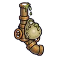

กบท่อระบาย
มอนธาตุพิษ Lv 68–80
เจอที่
| แมพ | โซน | Lv | ภูมิภาค |
|---|---|---|---|
| คูเมืองน้ำนิ่ง | 68–76 | เมืองหอระฆัง | |
| คูเมืองน้ำนิ่ง | สะพานชักจม | 76–80 | เมืองหอระฆัง |
ค่าสถานะตามเลเวล
| Lv | HP | ATK | DEF | MDEF | EXP | Job |
|---|---|---|---|---|---|---|
| 68 | 18,141 | 141–212 | 16 | 12 | 78 | 59 |
| 74 | 22,950 | 157–235 | 18 | 13 | 84 | 63 |
| 80 | 28,817 | 173–259 | 19 | 14 | 91 | 68 |
ตีด้วยธาตุไหนดี
แรงขึ้น: —
เบาลง: มืด ×0.5 อมตะ ×0.5 พิษ ×0
วัตถุดิบที่ดรอป
| ของ | โอกาส | |
|---|---|---|
| เมือกท่อระบาย | 55% | 1 ชิ้น (15% ได้ 2) |
อุปกรณ์ที่ดรอป (1)
| ของ | โอกาส |
|---|---|
 ปืนพกคู่ท่อระบาย | 0.25% |
สกิล
กระโจน (Lv 25+) · กระโจน (Lv 60+)